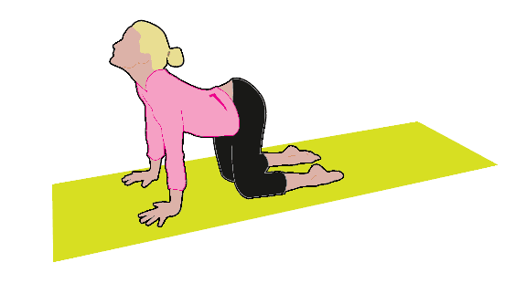

Today: Gentle Movement & Flexibility
Focus on smooth movements and listen to your body. Follow the steps below. Remember, you can pause or modify if needed.
Workout Steps:
Mark each step complete as you go. Use the options button () if you need to adjust a specific step.
-
Warm-up: Gentle neck rolls, shoulder circles, arm swings.
-
Cat-Cow Stretch: Focus on spinal mobility.
-
Child's Pose: Relax and breathe deeply.
-
Seated Forward Fold: Gentle hamstring stretch.
-
Light Walk: Indoors or outdoors, comfortable pace.
-
Cool-down: Deep breathing exercises.
Visual Guide Example: Cat-Cow Stretch

This gentle movement helps improve spinal flexibility and can relieve tension. Focus on coordinating breath with movement.
How Did It Go? Tell Us More!
Your detailed feedback is key to making FitSync work better for you. Be honest!